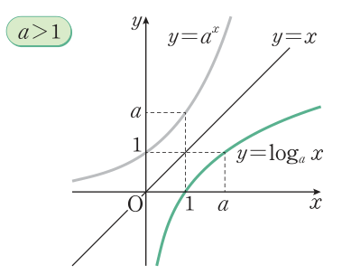
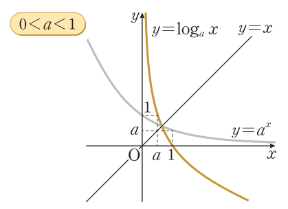
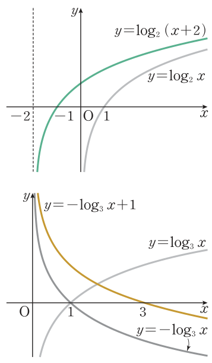

2026학년도 1학기 | 대수
두 학생이 지수함수 \(y=2^x\)의 역함수를 두고 이야기한다. "역함수의 그래프는 어떤 모양일까?" — "역함수의 그래프니까 직선 \(y=x\)에 대하여 대칭이동하면 되지 않을까?" — "그럼 \(y=2^x\)의 역함수는 어떻게 구하지?" — "\(y=2^x\)을 \(x\)에 대하여 풀면…"
[개방형 발문] ① 로그의 정의를 이용하여 \(y=2^x\)에서 \(x\)를 \(y\)로 나타내 보자. ② 역함수를 구하려면 무엇이 보장되어야 하는가? (\(y=2^x\)은 일대일대응인가?)
[연결] \(y=2^x\) \(\Leftrightarrow\) \(x=\) \(\log_2 y\). 여기서 \(x\)와 \(y\)를 바꾸면 \(y=\log_2 x\) — 오늘의 주인공 로그함수다. 오늘은 ① 로그함수의 뜻, ② 지수함수와 대칭인 그래프, ③ 로그함수의 성질, ④ 평행·대칭이동한 그래프, ⑤ 성질을 이용한 대소 비교와 최대·최소를 익힌다.
지수함수 \(y=a^x\ (a\gt0,\ a\ne1)\)은 실수 전체의 집합에서 양의 실수 전체의 집합으로의 일대일대응이므로 역함수가 존재한다. \(y=a^x\)에서 로그의 정의에 의하여 \(x=\log_a y\)이고, \(x\)와 \(y\)를 바꾸면
\(y=\) \(\log_a x\) (\(a\gt0,\ a\ne1\))
이 함수를 \(a\)를 밑으로 하는 로그함수라 한다.
🎯 정의역과 치역이 서로 바뀐다
로그함수의 정의역은 양의 실수 전체의 집합, 치역은 실수 전체의 집합 — 지수함수의 치역이 로그함수의 정의역, 지수함수의 정의역이 로그함수의 치역이다.
\(y=\log_a x\)는 \(y=a^x\)의 역함수이므로, \(y=\log_a x\)의 그래프는 \(y=a^x\)의 그래프를 직선 \(y=x\)에 대하여 대칭이동한 것이다.
\(y=2^x\) 위의 점 \((0,1),\ (1,2),\ (2,4)\) → \(y=\log_2 x\) 위의 점 \((1,0),\ (2,1),\ (4,2)\) (좌표를 맞바꿈).
기억 장치: \(\log_a 1=0,\ \log_a a=1\)이므로 그래프는 항상 점 \((1,0)\)과 \((a,1)\)을 지난다.

1일 때 y=log_a x의 그래프 (교과서 48쪽 · 로그함수의 그래프)" class="w-full max-w-xs mx-auto" />
참고: \(\log_{\frac1a}x=-\log_a x\)이므로 \(y=\log_a x\)와 \(y=\log_{\frac1a}x\)의 그래프는 \(x\)축에 대하여 대칭이다. (지수함수는 \(y\)축 대칭이었다는 것과 비교!)
예제 1 그래프를 그리고 점근선을 구하시오.
(1) \(y=\log_2(x+2)\): \(y=\log_2 x\)를 \(x\)축 방향으로 \(-2\)만큼 평행이동. 점근선 \(x=-2\)
(2) \(y=-\log_3 x+1\): \(y=\log_3 x\)를 \(x\)축에 대하여 대칭이동한 후 \(y\)축 방향으로 \(1\)만큼 평행이동. 점근선 \(x=0\)
주의: 로그함수의 점근선은 세로선 \(x=m\). \(x\)축 방향 이동은 점근선을 움직이지만 \(y\)축 방향 이동은 점근선을 바꾸지 않는다 (지수함수와 반대).

예제 2 두 수 \(\frac12\log_{\frac12}100,\ 2\log_{\frac12}3\)의 대소를 비교하시오.
\(\frac12\log_{\frac12}100=\log_{\frac12}(10^2)^{\frac12}=\log_{\frac12}10\), \(\ 2\log_{\frac12}3=\log_{\frac12}3^2=\log_{\frac12}9\)
\(y=\log_{\frac12}x\)는 감소하는 함수이고 \(10\gt9\)이므로 \(\ \log_{\frac12}10\lt\log_{\frac12}9\)
따라서 \(\frac12\log_{\frac12}100\) \(\lt\) \(2\log_{\frac12}3\)
최대·최소: 닫힌 구간에서 로그함수도 증가(또는 감소)하므로 양 끝에서 최댓값·최솟값을 갖는다. 진수가 \(a\)의 거듭제곱이 되는 끝값이 계산하기 좋게 주어진다.
역함수·로그 계산을 되살리고 로그함수를 구별하며 그래프를 그리는 단계
평행·대칭이동과 증감을 이용해 점근선, 최대·최소, 대소를 판단하는 단계
"틀려야 는다!" 식이 같아 보여도 정의역이 다르면 다른 함수
\(\log_a M^k=k\log_a M\)은 \(M\gt0\)일 때만 쓸 수 있다. \(x^2\)은 \(x\lt0\)이어도 양수이므로 \(y=\log_2 x^2\)의 정의역은 \(x\ne0\)인 실수 전체인데, \(y=2\log_2 x\)의 정의역은 \(x\gt0\)뿐이다.
📖 출처: 교과서 51쪽 · 공학 도구 '지수함수와 로그함수의 그래프의 이해' 확인 2 (유형)
난이도 ★★★ (6분) · 핵심: \(y=a^x\)과 \(y=\log_a x\)의 그래프는 직선 \(y=x\)에 대하여 대칭
📖 출처: 자체 출제 · 로그함수의 식 복원과 역함수 (유형)
난이도 ★★★ (6분) · 핵심: 점근선 \(x=-a\), 지나는 점, 역함수 = 지수함수
스마트폰으로 우측 QR코드를 스캔하여, 아래 3가지 유형 중 하나 이상을 체크하고 통합 서술형으로 작성해 제출한다.